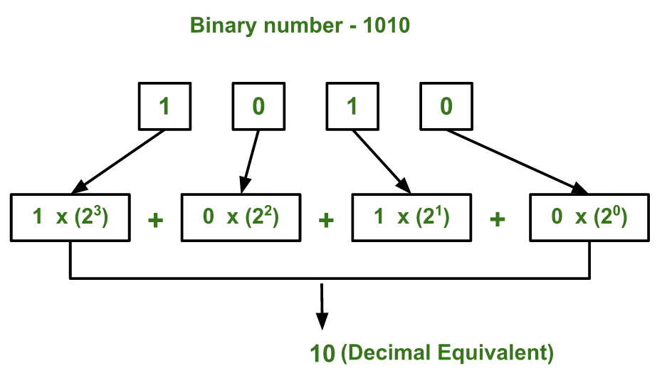

Given a binary number as input, we need to write a program to convert the given binary number into equivalent decimal number.
Examples:
Input : 111 Output : 7 Input : 1010 Output : 10 Input: 100001 Output: 33
The idea is to extract the digits of given binary number starting from right most digit and keep a variable dec_value. At the time of extracting digits from the binary number, multiply the digit with the proper base (Power of 2) and add it to the variable dec_value. At the end, the variable dec_value will store the required decimal number.
For Example:
If the binary number is 111.
dec_value = 1*(2^2) + 1*(2^1) + 1*(2^0) = 7
Below diagram explains how to convert ( 1010 ) to equivalent decimal value:

Below is the implementation of above idea :
C++
// C++ program to convert binary to decimal
#include<iostream>
using namespace std;
// Function to convert binary to decimal
int binaryToDecimal(int n)
{
int num = n;
int dec_value = 0;
// Initializing base value to 1, i.e 2^0
int base = 1;
int temp = num;
while (temp)
{
int last_digit = temp % 10;
temp = temp/10;
dec_value += last_digit*base;
base = base*2;
}
return dec_value;
}
// Driver program to test above function
int main()
{
int num = 10101001;
cout < <binaryToDecimal(num)<<endl;
}